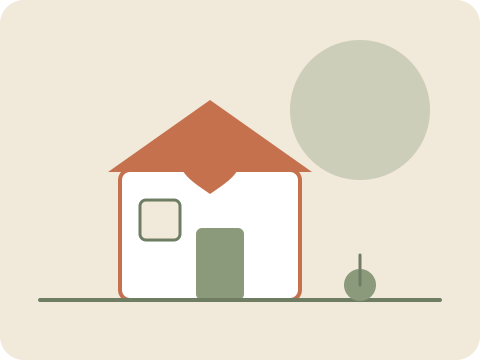

Historia Clínica Digital
Registro cronológico y foliado de informes, indicaciones médicas y actividades diarias de cada paciente.
Un sistema pensado para centralizar la historia clínica, los informes de especialistas y el control de asistencia del personal de Nuova Vita.
Conocer más
Nuova Vita es un centro de descanso para adultos mayores que combina atención profesional con un enfoque humano. Este sistema acompaña esa tarea centralizando la información clínica y administrativa en un solo lugar, con acceso seguro para cada rol del equipo.
Registro cronológico y foliado de informes, indicaciones médicas y actividades diarias de cada paciente.
Integración con reloj biométrico para el registro de marcados de entrada y salida del personal.
Carga y consulta de informes por especialidad, con trazabilidad de quién registró cada dato.
Accesos por rol, registro de auditoría y cumplimiento de la normativa vigente de datos de salud.
Accede a la historia clínica completa de sus pacientes asignados, en el centro o de forma remota.
Carga y consulta sus propios informes (kinesiología, nutrición, entre otras) para cualquier paciente.
Registra las actividades diarias: rutina, medicación, alimentación e incidencias.
Gestiona usuarios e infraestructura del sistema, sin acceso al contenido clínico.